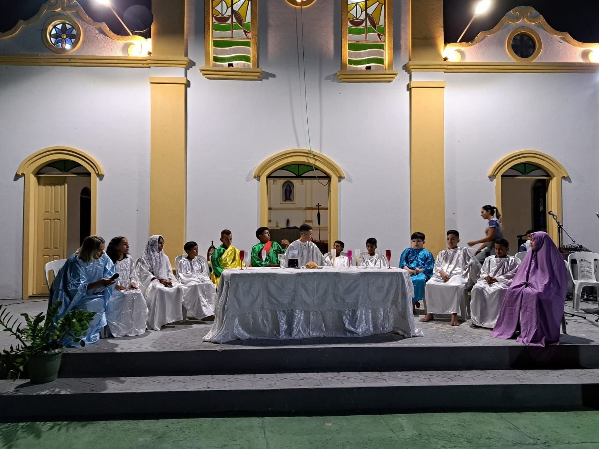
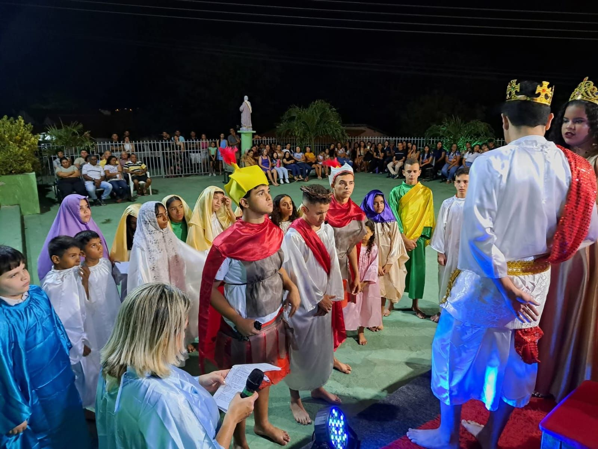
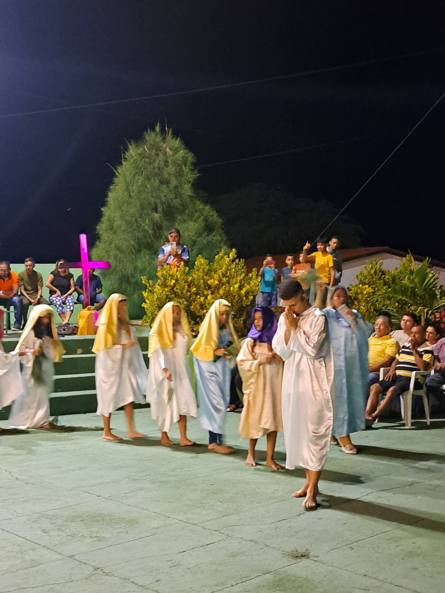
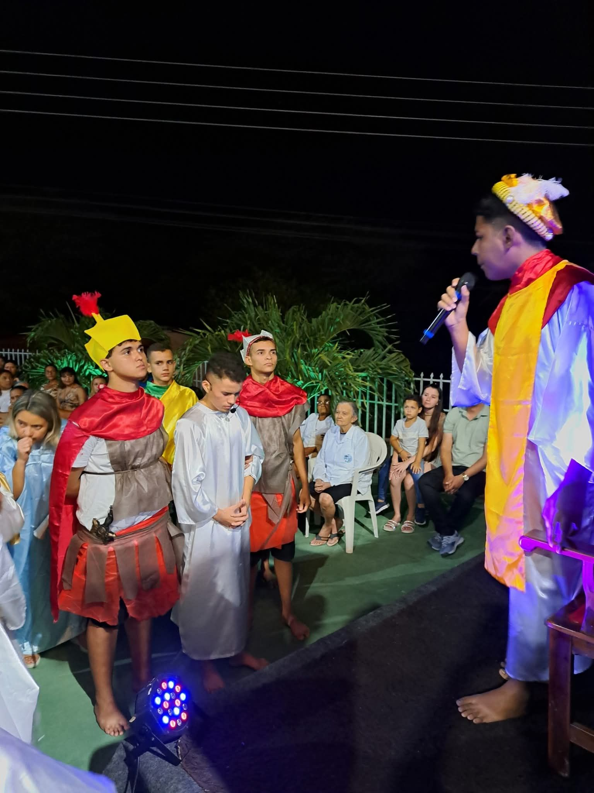
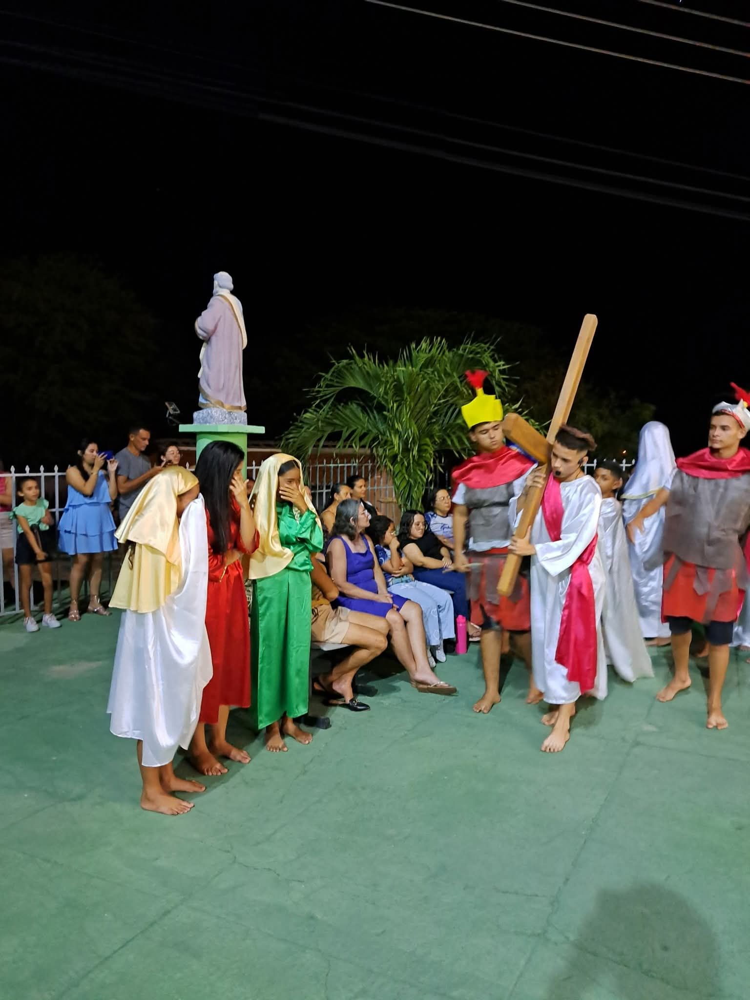
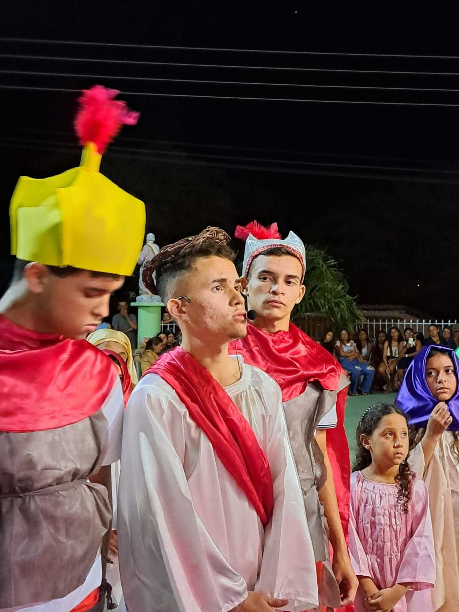
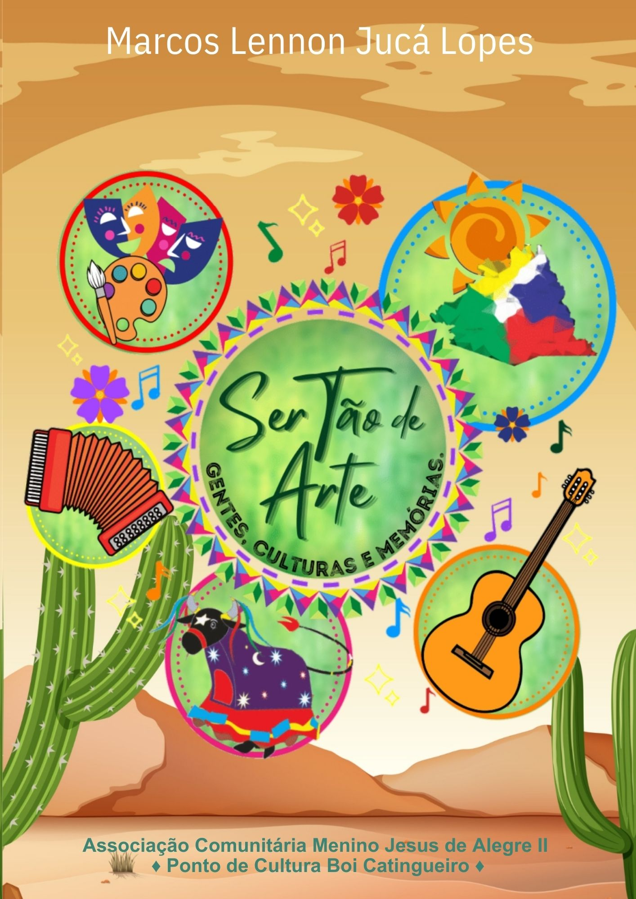

Nossos Projetos
Iniciativas que transformam realidades através da arte, educação e cidadania.






Espetáculo da Paixão de Cristo
Desde 2016, a comunidade de Alegre se une para realizar um dos maiores espetáculos teatrais a céu aberto da região. Mais do que uma encenação religiosa, é um laboratório de teatro, figurino e cenografia que envolve dezenas de jovens locais.
- Impacto: +50 atores e figurantes locais
- Público: Atrai visitantes de toda a região
- Formação: Oficinas de interpretação e voz


Teatro como Laboratório e Vivência no Território
Em fase de execução na comunidade de Alegre II (Itatira), o projeto fortalece o teatro como ferramenta de inclusão e expressão. Apoiado pelo Ministério da Cultura e Secult-CE, a iniciativa transforma o Espaço Cultural Sertão das Artes em um grande ponto de encontro comunitário, com direito a lanches e acolhimento para garantir a permanência dos alunos.
- Interpretação e Improvisação: Conduzido por Mestre Martônio (Dez/2025), com 29 alunos focados em expressão corporal e personagens.
- Montagem de Roteiro: Ministrado por Wellington Almeida (Jan/2026), capacitando 24 participantes em dramaturgia.
- Culminância: Aquisição de novos figurinos teatrais e a emocionante apresentação da peça "Saga do Boi Catingueiro".
"Esse projeto nasce do desejo de dar oportunidade. O teatro aqui é aprendizado, convivência e também preservação da nossa cultura."
— Antônio Inácio, Proponente"Projetos como esse ampliam horizontes para nossos jovens. O teatro desenvolve expressão e aproxima a comunidade da arte."
— Ilzenir Germano, Diretora"Foi muito importante participar. A gente aprende técnicas, perde a timidez e descobre novas formas de se expressar no palco."
— Henri Vieira, Cursista"É muito bom ver nossos filhos aprendendo coisas novas. O teatro ajuda na disciplina, na convivência e na autoestima deles."
— Andressa Domingos, MãeAções de Formação e Cidadania
 Em Atividade
Em Atividade
Funarte Ações Continuadas
Um programa intensivo de formação artística apoiado pelo MINC. Oferecemos 180h de cursos em Circo, Teatro de Rua e Performance, profissionalizando a juventude rural.
 Legado
Legado
Cine Mais Cultura
Implantado em 2009, democratizou o acesso ao audiovisual na comunidade. Onde não havia cinema, criamos uma janela para o mundo através de exibições gratuitas e debates.
 Formação
Formação
Escola de Música
Cursos de Flauta Doce, Violão e Teclado. A musicalização é uma das ferramentas mais potentes do Boi Catingueiro para desenvolver disciplina e sensibilidade nas crianças.
Ser Tão de Artes: Gentes, Cultura e Memórias
Autor: Lennon Lopes
Lançado no Museu de Itatira, este livro é um documento histórico que registra a alma do nosso povo. Uma obra essencial para entender a identidade cultural dos sertões de Canindé e a trajetória de resistência dos nossos mestres e brincantes.
Acessar Obra Digital
Nossa Infraestrutura
Projetos que deixam legado físico para a comunidade.
Cisternas & Água
Projetos de abastecimento para convivência com o semiárido.
Sede Ampliada
Espaço cultural reformado com auditório e salas de aula.
Arborização
Ações de plantio e sustentabilidade ambiental.
Arquivo de Projetos Realizados
Histórico de iniciativas que marcaram nossa trajetória.
| Ano | Projeto | Local | Status |
|---|---|---|---|
| 2021 | Seminário Regional LGBT | Itatira (Híbrido) | Concluído |
| 2021 | Noites Culturais (Itinerante) | Assentamentos Diversos | Concluído |
| 2021 | Ampliação do Prédio do Ponto | Sede Alegre II | Concluído |